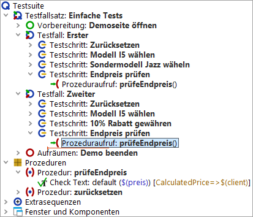
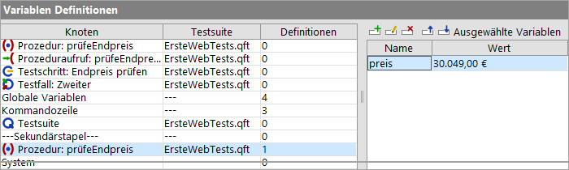
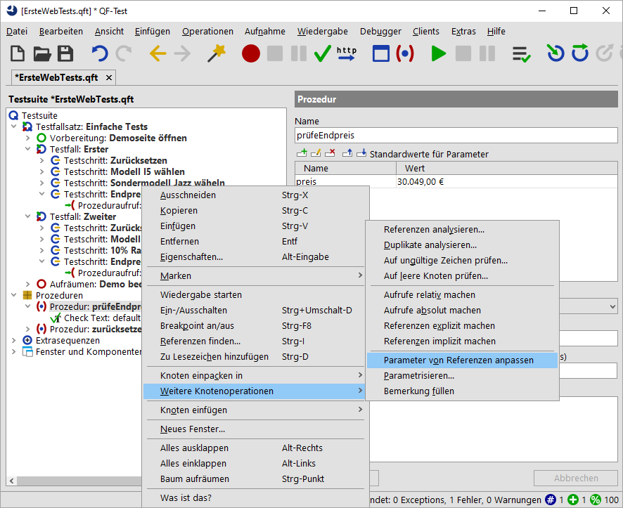

| Version 6.0.3 |
Im nächsten Schritt fügen wir einen Prozeduraufruf im zweiten Testfall ein.
|
|  | ||
|
| Abbildung 15.5: Prozeduraufruf von "prüfeEndPreis" in der zweiten Prozedur | ||
Hinweis Wenn im Prozeduraufruf bereits der Preis mit Standardwert eingetragen ist, rührt das daher, dass der Prozeduraufruf mit Hilfe der Prozedur selbst erzeugt wurde. Entweder durch Kopieren der Prozedur oder durch eine Drag-and-Drop Aktion unter Verwendung des Prozedurknoten oder über direktes Einfügen der Prozedur wie weiter oben erläutert. Aktuell geht es jedoch um den Standardwert. Daher bitten wir Sie, den evtl. vorhandenen Preis-Parameter zu löschen, wenn Sie dem Tutorial Schritt für Schritt folgen wollen. Dazu klicken Sie das rote X über der Variablen-Definitionen-Tabelle.
Eine Fehlermeldung zeigt an, dass ein anderer als der angezeigte Preis erwartet wurde. Was lief schief? Lassen Sie uns nach dem Fehler forschen. Üblicherweise würden wir ins Protokoll schauen, aber es gibt noch eine andere wichtige Informationsquelle.
Im Debugging-Modus sehen Sie rechts unten im QF-Test Fenster eine Knotenliste mit Variablen, die von diesen gebunden sind.
|
|  | ||
|
| Abbildung 15.6: Variablen Definitionen | ||
Die Variablen Definitionen Tabelle ist beim Debuggen sehr hilfreich, da sie die aktuellen Werte der Variablen anzeigt. Sie unterstützt beim Arbeiten mit Prozeduren als auch beim Verständnis, wie QF-Test den richtigen Variablenwert ermittelt.
Hinweis QF-Test geht die Variablen Definitionen Tabelle immer von oben nach unten durch.
Sie sehen, dass in den ersten Zeilen keine Variablen gebunden sind. Auf der Ebene "Globale Variablen" ist eine Variable gebunden und auf dem Sekundärstapel für "Prozedur: prüfeEndpreis" eine weitere. Die globale Variable wird für die Verbindung zur SUT Applikation verwendet und wurde vor dem Anwendungsstart gesetzt. (vgl. Starten des Browsers). Die andere Variable interessiert uns im Moment mehr - sie hat jedoch den falschen Wert.
Dieser Wert auf dem Sekundärstapel ist der Standardwert, da er dann verwendet wird, wenn nirgendwo sonst einer Variablen mit dem gleichen Namen ein Wert zugewiesen wurde.
Um es richtig zu machen, müssen wir den korrekten Wert beim Prozeduraufruf an die Prozedur übergeben. Wieder gibt es mehrere Arten, dies zu tun. Ein Weg wäre, eine neue Zeile in der Variablen Definitionen Tabelle in den Details des Prozeduraufrufs einzufügen, ähnlich wie beim Prozedurknoten im vorigen Abschnitt.
Wenn es jedoch bereits mehrere Prozeduraufrufe gibt, ist folgendes einfacher:
|
|  | ||
|
| Abbildung 15.7: Popup-Menü für "Parameter von Referenzen vervollständigen" | ||
Im Prozeduraufruf erzeugt QF-Test für jeden Standardwert eine Zeile in der Variablen
Definitionen Tabelle.
In unserem Fall wurde eine Zeile für den
Parameter mit dem Namen preis und dem Wert 30.049,00 €
hinzugefügt.
Auch damit wird es im zweiten Testfall noch nicht funktionieren, auch wenn der Wert direkt übergeben wird, weil es sich immer noch um den Standardwert handelt, der hier nicht korrekt ist. Bitte verändern Sie den Wert noch nicht, damit wir Ihnen mittels des entstehenden Fehlers eine weitere Möglichkeit des Debuggens zeigen können.
| Letzte Änderung: 6.9.2022 Copyright © 2002-2022 Quality First Software GmbH |